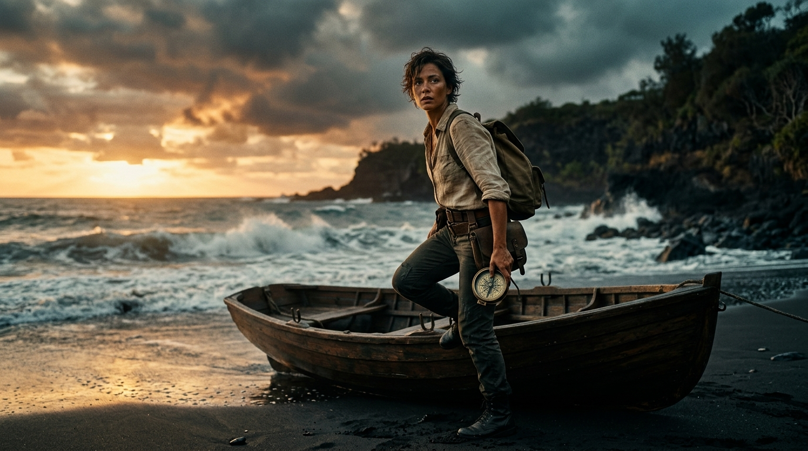
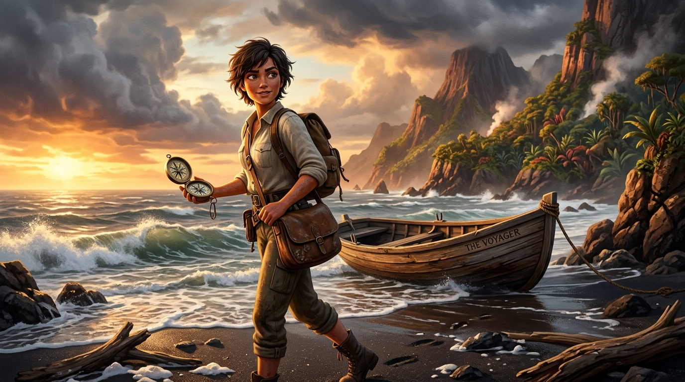
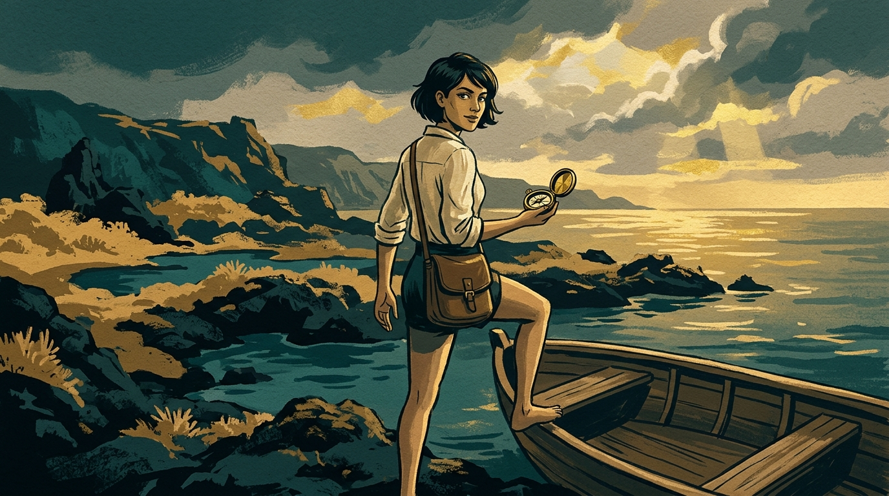
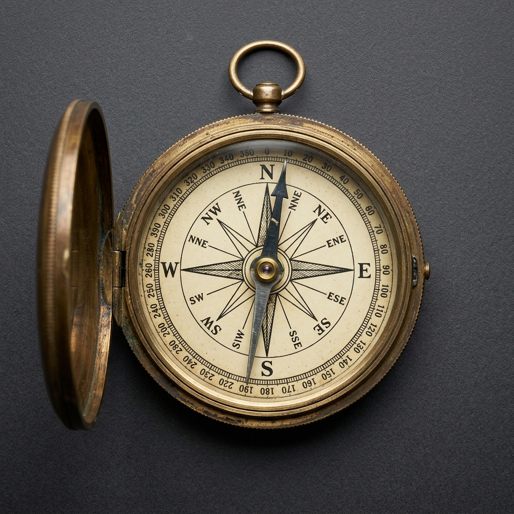
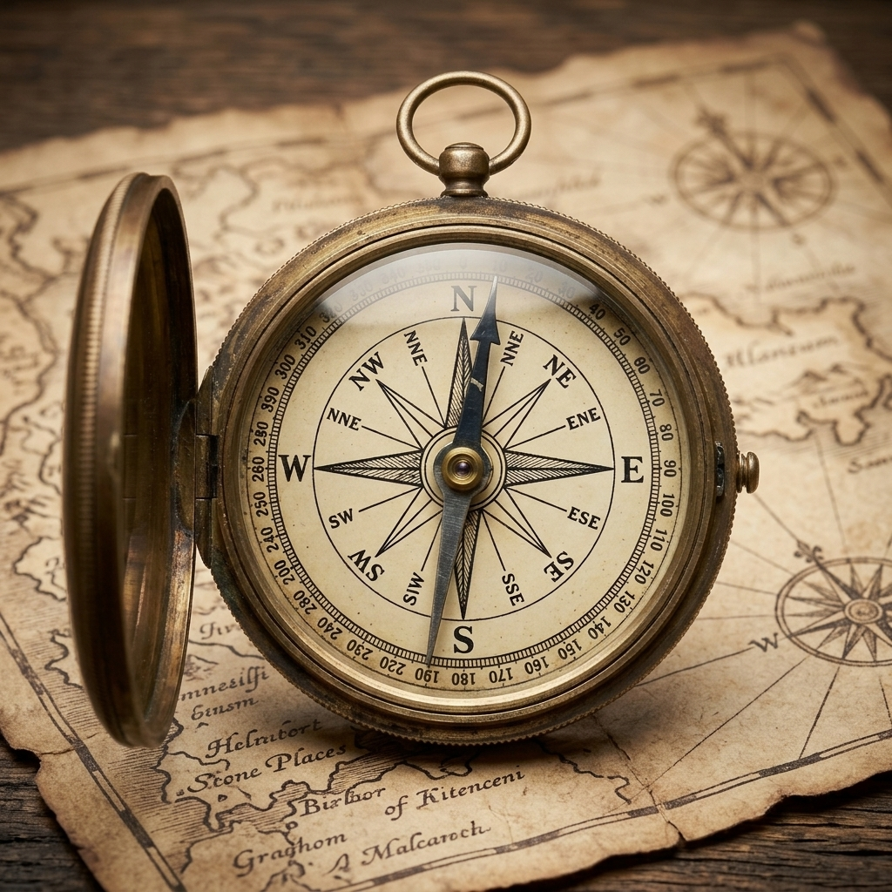
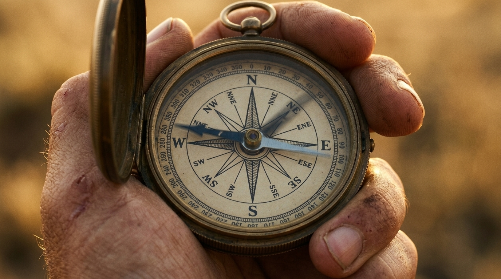
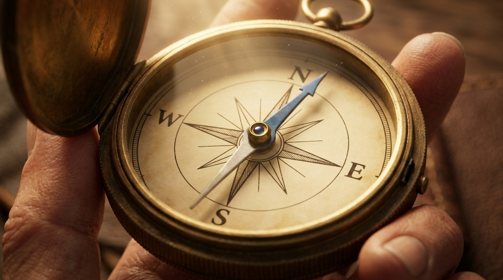
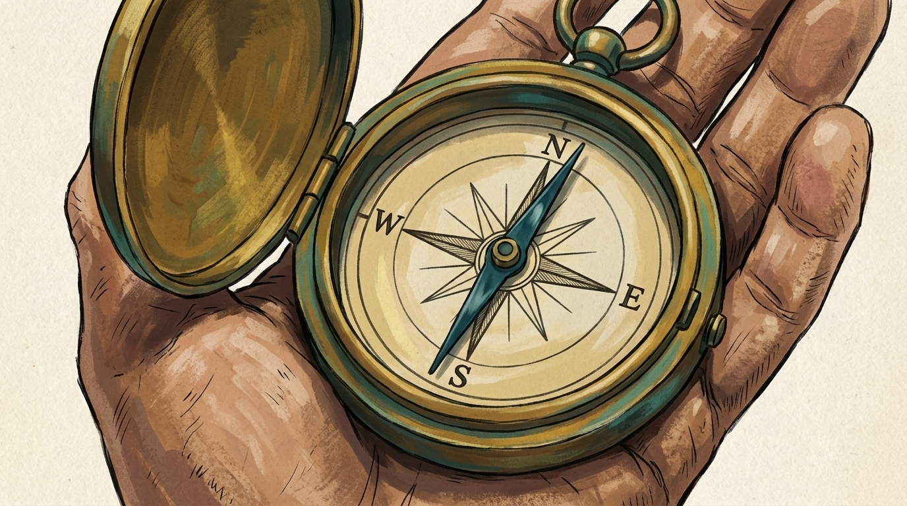
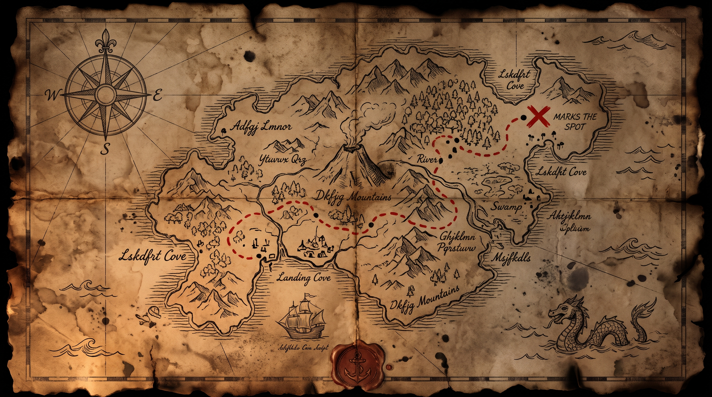

前三張是同一拍（尋寶者上島回頭）的三種風格；接著是指南針參考圖與三種風格的指南針特寫；最後是地圖。要選的是：風格 1／2／3，以及指南針特寫是否可接受。

實拍電影感。指南針在手上但很小；角色多了一個背包（spec 只寫 satchel）。
Cinematic live-action film still, anamorphic lens, 35mm film grain. A weathered treasure hunter in her 30s, sun-worn linen shirt, leather satchel, short dark hair, steps from a wooden rowboat onto a wild volcanic island shore at golden hour and glances back over her shoulder toward the camera. In her hand an antique brass magnetic compass. Storm clouds breaking behind her, wet black sand, sea spray. Shallow depth of field, moody teal-and-amber grade. No text.

3D 動畫。注意：她左手好像拿著兩個指南針（或是蓋子被畫成第二個錶盤）；船身出現 THE VOYAGER 字樣（prompt 有寫 No text）。
High-end 3D animated feature film still, stylized but detailed, in the manner of a modern animated adventure movie (subsurface skin, painterly textures, volumetric light). A treasure hunter in her 30s, sun-worn linen shirt, leather satchel, short dark hair, steps from a wooden rowboat onto a wild volcanic island shore at golden hour and glances back over her shoulder toward the camera. In her hand an antique brass magnetic compass. Storm clouds breaking behind her, wet black sand, sea spray. Warm cinematic lighting. No text.

2D 水粉。構圖最有海報味；指南針很小；角色變成短褲赤腳（prompt 沒寫）。
2D hand-painted animation key frame, gouache and ink, visible brush texture, limited palette of deep teal, sand ochre and brass gold, graphic shapes, slight paper grain. A treasure hunter in her 30s, sun-worn linen shirt, leather satchel, short dark hair, steps from a wooden rowboat onto a wild volcanic island shore at golden hour and glances back over her shoulder toward the camera. In her hand an antique brass magnetic compass. Storm clouds breaking behind her. No text.

物件參考圖（之後所有指南針鏡頭都用它當 reference）。N E S W + 度數環 + 單一磁針，沒有時鐘元素。
Product design reference sheet of a single antique brass MAGNETIC COMPASS, top-down view, centered on plain dark grey background. Round brass case with a hinged lid open flat, glass face, white enamel dial printed with a 16-point compass rose and the cardinal letters N, E, S, W in black serif, degree ticks around the rim. ONE slender steel needle, blued steel on the north half, bright steel on the south half, pivoting on a central brass pin. NO clock numerals, NO clock hands, NO Roman numerals, NO minute track. Scratched, patinated brass. Studio lighting, sharp focus. No text other than N E S W.

用 compass-front 當參考重畫 3/4 角度：盤面、指針、外殼完全一致。地圖上有半真半假的字。
The same antique brass magnetic compass as the reference image, now seen from a 3/4 angle resting on a weathered parchment map, lid open, glass catching a warm highlight. Same white enamel dial with compass rose and letters N E S W, same single blued-steel needle. NO clock numerals, NO clock hands. Shallow depth of field. No text other than N E S W.

實拍風格 + 參考圖：一致性好，細節到度數環都對。
Cinematic live-action macro film still, 35mm film grain. Extreme close-up of the antique brass magnetic compass from the reference image held in a weathered hand, lid open, the single blued-steel needle swinging. Dial shows compass rose and letters N E S W only. NO clock numerals, NO clock hands. Golden hour rim light, shallow depth of field. No text.

3D 風格 + 參考圖：只剩 N E S W 四個字母（沒有度數環），指針變藍色；算一致。
High-end 3D animated feature film still, stylized but detailed. Extreme close-up of the antique brass magnetic compass from the reference image held in a hand, lid open, the single blued-steel needle swinging. Dial shows compass rose and letters N E S W only. NO clock numerals, NO clock hands. Warm volumetric light, shallow depth of field. No text.

2D 風格 + 參考圖：一致，線稿化。
2D hand-painted animation key frame, gouache and ink, teal / ochre / brass palette, paper grain. Extreme close-up of the antique brass magnetic compass from the reference image held in a hand, lid open, single blued-steel needle. Dial shows compass rose and letters N E S W only. NO clock numerals, NO clock hands. No text.

2K。有可用的紅色路線和 X；但出現真字（X MARKS THE SPOT、River、Swamp、Landing Cove），prompt 要求亂寫字沒完全遵守。
An old hand-drawn treasure map on aged, stained parchment, seen flat from above, filling the frame. Ink coastline of a volcanic island, a winding dotted route, a compass rose in one corner, small sea-monster and sailing-ship illustrations, faint latitude lines, a red X near a cove. Burnt edges, wax stain, fold creases. Warm candle-lit tone. Do not write any real words; use illegible scribbles for place names.